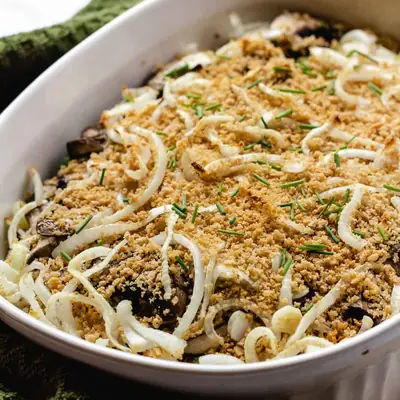

Vegan Green Bean Casserole

Ingredients
- 16 oz frozen green beans
- 3/4 cup sliced mushrooms
- 4 tbsp vegetable stock
- 2 tbsp gluten-free flour
- 1 1/2 cups unsweetened soy milk
- 1 tbsp dijon mustard
- 1/2 tsp salt
- 1/4 tsp sage
- 1/4 tsp oregano
- 1/4 tsp black pepper
- 1 small white onion (finely sliced)
- 1/4 cup gluten free Panko breadcrumbs
Steps
- Preheat oven to 375 F. Add green beans, then mushrooms to casserole dish. Set aside.
- In a saucepan on low heat, add 2 tbsps of vegetable stock. Stir in the gluten-free flour until a paste is formed. Add soy milk, dijon mustard, salt, pepper, sage, and oregano. Whisk together. Continue to whisk until sauce begins to thicken. Remove from heat, and set aside.
- Add 2 tbsp of vegetable stock to fry pan. Add thinly sliced onions. Sauté until soft about 3 minutes. Sprinkle gluten-free breadcrumbs overtop. Continue to sauté for an additional 2-3 minutes or until breadcrumbs are toasted and onions begin to brown.
- Pour cream sauce overtop the mushrooms and green beans. Top with onions and breadcrumbs. Add a touch more breadcrumbs if you desire.
- Bake for 35 minutes. Remove and allow to cool for 10 minutes before serving.
Recipe by Anjali Shah · The Picky Eater, from The Picky Eater. Saved here for personal use; the original has the full notes, tips and photos. Open original